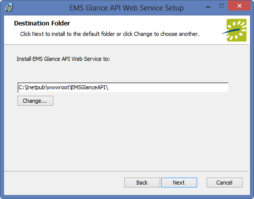
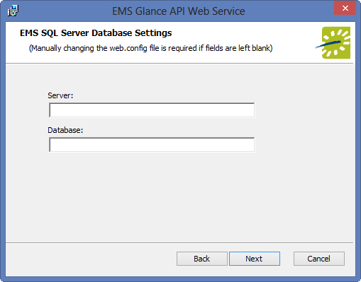
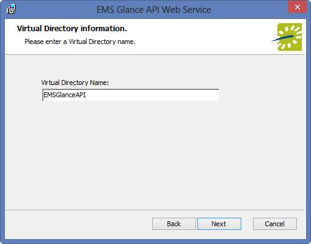
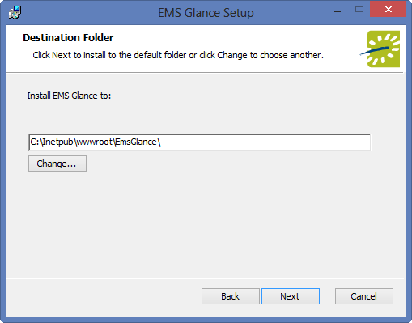
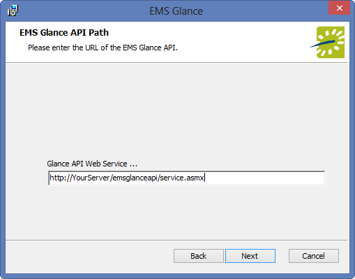
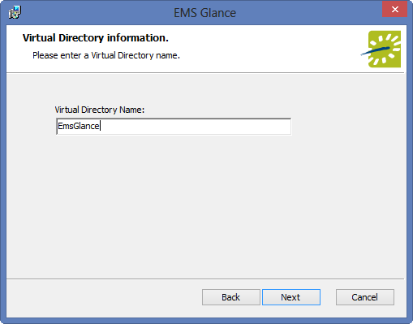
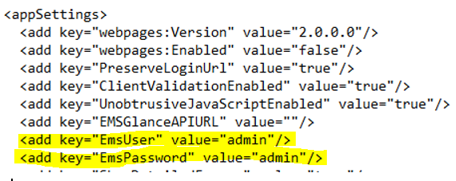
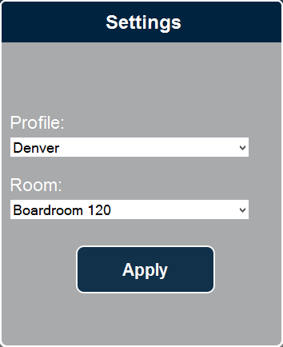

Installing EMS Glance
To install or upgrade EMS Glance, you will:
- Update your database with the new Glance .sql file.
- Copy the Glance .dll file to each user workstation that needs Glance options on .
- Install the new Glance API on the web server that will be running it, and verify it.
- Install the new Glance web application on the web server that will be hosting it (and hook it to your Glance API, SQL server, and database).
- Create an Admin User to manage EMS Glance.
- Access your EMS Glance application through the web on your device(s).
Install/Upgrade the Database Component
- Obtain the EMSGlance.sql file.
- Open Microsoft SQL Server Management Studio.
- Within Microsoft SQL Server Management Studio, select File > Open > File… and locate EMSGlance.sql.
- Select your EMS database and execute the query (Query > Execute). When query execution has completed, a ‘Command(s) completed successfully’ message will display in the Results section.
Install/Upgrade the EMS Glance DLL
- On each client machine that needs access to the EMS Glance Settings area, paste a copy of the EMS.Glance.dll file into the folder that contains your EMS application files (typically C:\Program Files\EMS).
- Once the EMS.Glance.dll is placed in the correct folder on the client machine (assuming your organization is appropriately licensed for EMS Glance), the EMS user will see the EMS Glance Settings button on the tool bar within the EMS application.
Note: To update your registration, go to System Administration > Settings > Registrationin the EMS Desktop Client.
Install/Upgrade the EMS Glance API
- Manually uninstallany previous versions of the EMS Glance API on your web server.
- Download the EMSGlanceAPI.msi file onto the web server that will be running the EMS Glance API.
- Run EMSGlanceAPI.msi.
- The first screen welcomes you to the EMS Glance API Web Service Setup Wizard. Click Next to begin the installation process. The Destination Folder screen will appear.

- Select the destination folder. The installation process will create a new physical directory on your web server based on the destination folder path entered (“EMSGlanceAPI” in the example above.) Click Next.
Note: The EMS Glance API should not be installed in the same physical directory as other EMS web-based products OR under a site running another version of the EMS Glance API.
- The EMS SQLServer Database Settings information screen will appear.

- Enter your EMS SQL Server name.
- Enter your EMS Database name:
- EMS Professional customers – typically named “EMSData”
- EMS Workplace, EMS Campus, EMS Enterprise, EMS District and EMS Legal customers - typically named “EMS”
- Click Next.
- The Virtual Directory information screen will appear.

- The Virtual Directory Name will default to the destination folder specified in Step 5. It is recommended that you keep the default setting. The installation process will create a virtual directory on your web server based on the virtual directory entered (“EMSGlanceAPI” in the example above.) Click Next.
Note: The EMS Glance API should notbe installed in the same virtual directory as other EMS web-based products OR under a site running another version of the EMS Glance API.
- The Ready to install EMS Glance API Web Service screen will appear. Click Install button to install the EMS Glance API.
- The Completed the EMS Glance API Web Service Setup Wizard screen will appear. Click Finish.
Verify the EMS Glance API Installation
After following the steps above, verify your EMS Glance API installation by opening a browser and entering the EMS Glance API URL:
Example: http://[ServerName]/EMSGlanceAPI/service.asmx
(replace [ServerName] with the name of your web server)
Note: This URL will be required for the EMS Glance Web Application installation.
Install/Upgrade the EMS Glance Web Application
- Download the EMSGlance.msi file onto the web server that will be running the EMS Glance web application.
- Run EMSGlance.msi.
- The first screen welcomes you to the EMS Glance Setup Wizard. Click Next to begin the installation process. The Destination Folder screen will appear.

- Select the destination folder. The installation process will create a new physical directory on your web server based on the destination folder path entered (“EMSGlance” in the example above.) Click Next.
Note: EMS Glance should notbe installed in the same physical directory as other EMS web-based products OR under a site running another version of EMS Glance.
- The EMS Glance API Path screen will appear.

- Enter the URL of your Glance API Web Service.
Example: http://[ServerName]/EMSGlanceAPI/service.asmx
(replace [ServerName] with the name of your web server)
- Click Next.
- The Virtual Directory information screen will appear.

- The Virtual Directory Name will default to the destination folder specified in Step 4. It is recommended that you keep the default setting. The installation process will create a virtual directory on your web server based on the virtual directory entered (“EMSGlance” in the example above.) Click Next.
Note: EMS Glance should not be installed in the same virtual directory as other EMS web-based products OR under a site running another version of EMS Glance.
- The Ready to install EMS Glance screen will appear. Click Install button to install EMS Glance.
- The Completed the EMS Glance Setup Wizard screen will appear. Click Finish.
Create an EMS Admin User to Manage Your EMS Glance API Web Service
- Create the EMS Admin Account to be used for Glance:
- Create a user account in under System Administration > Security > Users (with any user name and password you choose).
- Uncheck the Administrator box.
- Then add the process, "EMS API Web Service Access", to this account.
- Enter the user name and password for the account in the web.config file of the Glance application settings, for example:

Tip for EMS Cloud Customers: Modifications to the web.config file must be performed by EMS Cloud Operations. To request these changes, please contact EMS Support.)
Launch EMS Glance on your Device(s)
Glance is ready to use once all of the Glance components have been properly installed and at least one Profile has been configured for use. To access Glance on your device, do the following:
- On your device, open a browser and enter the URL to your EMS Glance web application:
Example: http://[ServerName]/EMSGlance
(replace [ServerName] with the name of your web server)
- The first time you access Glance on your device, the Settings screen will appear.

- Select the Profile in the Profile dropdown.
- Select the Room in the Room dropdown.
- Click Apply.
Note: Once the EMS Glance application is running, to re-access the Settings screen for any reason, simply double-tap the EMS Glance logo in the upper-left hand corner of the screen.
- To optimize your tablet's settings, follow our Device Configuration Recommendations.